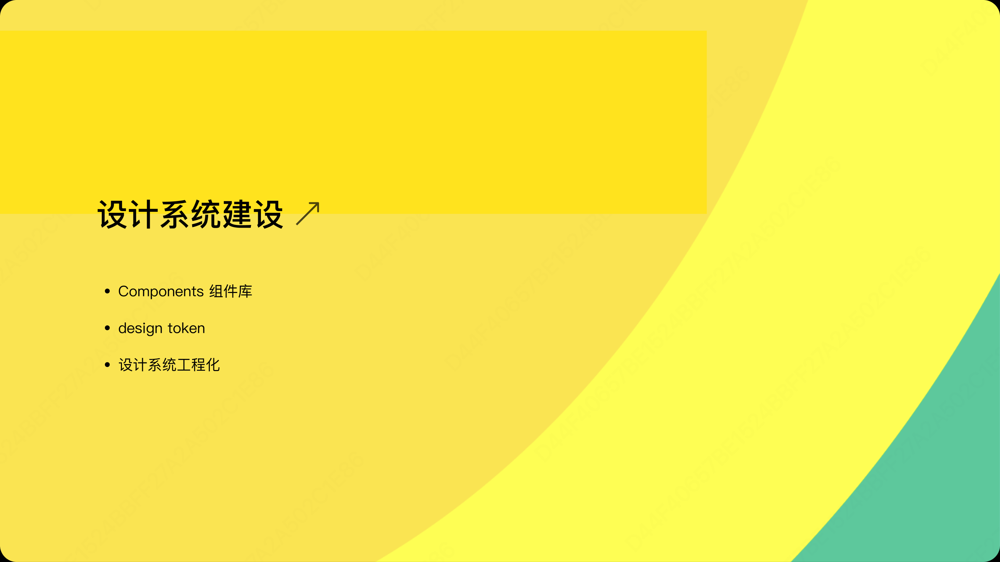
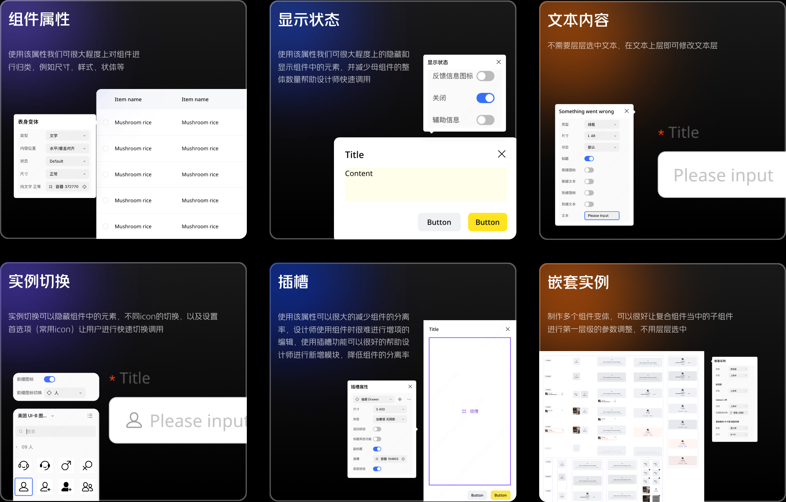
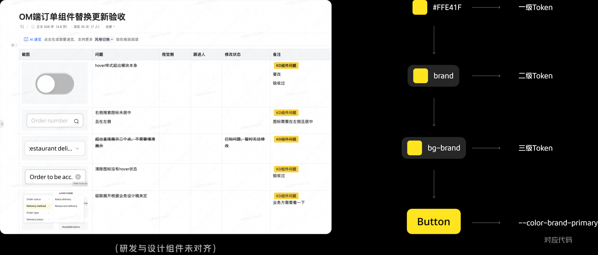
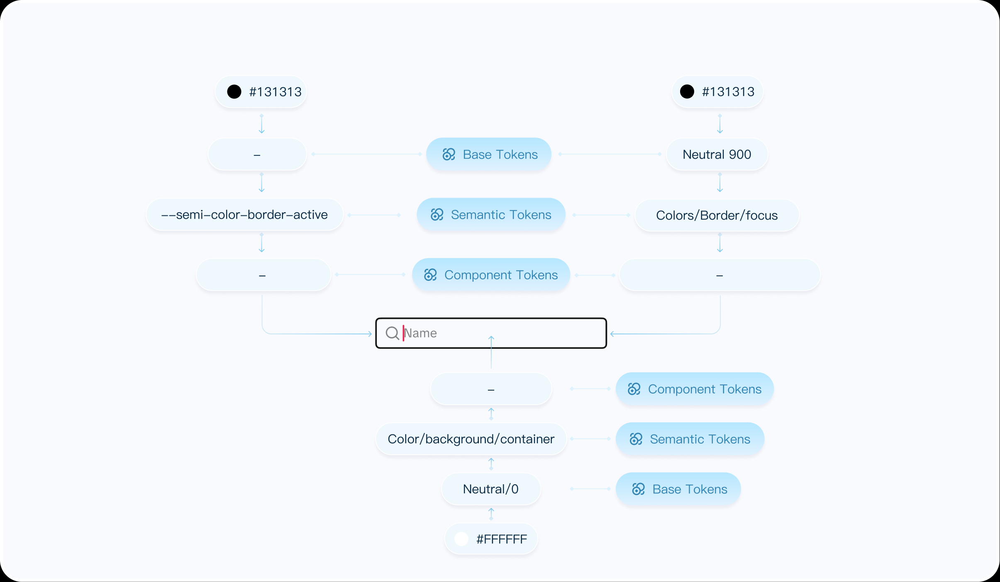
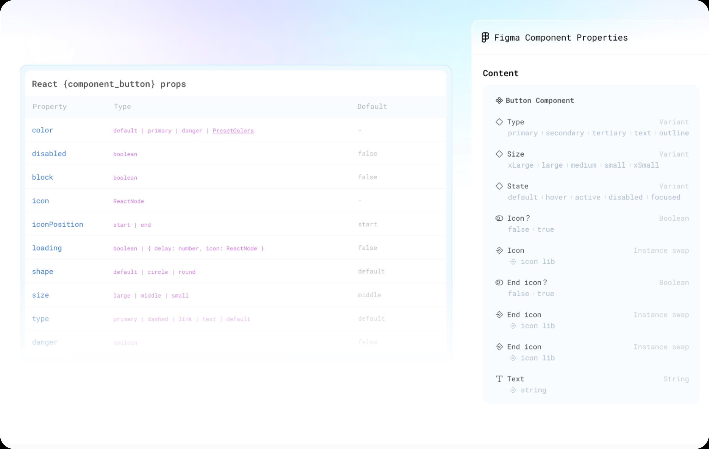
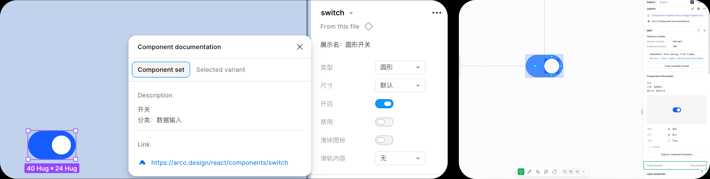

嫌下面太长?直接总结看我优势
- 能做什么?
- 能制定组件、设计规范、组件变体、Design Token以及涉及资产的沉淀.
- 优势
- 能够基于组件使用在不同的业务场景量化设计系统的价值与健康度,对应对应优化设计系统.
- 超出答案部分
- 设计工程化,通过构建Figma与代码的Props映射以及设计系统文档化建设,能够帮助设计和研发搭建桥梁.
- 结果
- 在Keeta和Platform完成组件、变体、Design Token的制作,同时基于分析设计系统健康度对应调整Platform的变体优化
PART ONE
Components 组件库
在我加入Keeta-B 商家端之前，仅仅只是部分高优的业务组件得到了搭建，基础组件还并未进行全局更新，刚开始我便定义一些基础组件的规范。在5名设计师的参与，且前中期样式规范仍在迭代的情况下，组件间有较好的样式和输出形式一致性。并输出了有近39+基础组件。并由概述、类型、业务使用场景、状态和应用指南进行解释，帮助设计师、产品、研发在进行调用组件变体时对应给出组件的使用方法和规范
“做最熟悉Mg/Fg功能边界的设计师”
在39个基础组件搭建完毕，开始独立负责组件变体工作，了解MG的组件属性，「组件状态」「显示状态」「文本内容」「实例切换」「插槽」「嵌套实例」，需合理使用来减少Component数量，嵌套实例可以很好的让复合组件的子组件进行第一层级的参数调整，帮助设计师快速切换状态

组件变体 效果显著增加
我将39个组件变体任务进行拆分逐个进行击破，由易到难。首先仅使用组件属性功能，在划分上分为「类型」「状态」「尺寸」不含盖其他功能的组件，例如：开关、徽标、标签、单选框和复选框等进行组件变体，逐步训练我的归类能力与命名能力，在面对复杂组件时需要将所有组件的状态进行绘制以及归类，并运用好各个组件变体的属性，来保持设计师在能流畅的切换的同时，尽可能减少母组件的数量


Design Token
在token层级上我们将其分为三个层级，基础Token、语义Token、组件Token，目前美团Keeta在token层级上仅涉及基础Toekn，随着团队业务的推进，关于新五大平台的建设需设计基建先行，目前基础Token难以维护与全局更新、设计的一致性难以保证，以及在验收过程中研发组件库与设计组件库样式大部分存在细节问题，需消耗大部分涉及人力...,设计系统的推进迫在眉睫

TTEP设计系统优化与搭建
在TikTok Platform Design期间负责TTEP设计组件变体的优化,以及制定新增组件如AI对话流助手面板,赋能到多个业务场景当中,并收集来自多个设计师的组件优化反馈,并分析组件分离率来对应针对性优化组件
制定组件的使用规范,深扒所有业务的使用场景,规定组件如何使用,帮助各个设计师有一套稳定的组件使用规则,同时支持设计系统的Dark mode 的录入等

量化设计系统的价值与健康度
在设计系统建设中，我始终坚持度量先行的原则，因为无法被度量的事物便无法被有效管理和优化。为此，借助 Figma Library Analytics，来分析设计系统在团队的使用情况以及后续的优化
质量维度：衡量系统的健康度与健壮性
组件分离率：核心监控指标，反映了组件在实际应用中是否满足需求。
通常来说，以 Pinterest 设计系统为例，行业认为4%以下分离率是一个比较健康的组件状态。
变体覆盖率：衡量组件对已知场景的覆盖能力。
效能维度：量化业务贡献与组件收益
需求吞吐量增幅：对比使用设计系统前后，同级别需求的平均完成工时，来量化协同效率的提升。

PART TWO
设计系统工程侧
Figma组件化是设计系统的核心产出,其基础的搭建方法与实践已经非常成熟,以上便简单带过,这里我想深入探讨的是关于设计系统工程侧的部分.
建立Figma Properties与代码 Props的映射
这里的核心就在于设计师与开发者之间建立一套统一的语言,Figma的Properties本就是视觉与交互的配置合集,而React当中的Props是逻辑与交互的接口,是父组件传递给子组件的配置参数，用来控制组件的外观和行为
为解决此问题需要严格定制一套组件属性命名和结构规范,确保设计与开发两端对组件的配置方式尽可能达到共识,这样无论设计师还是开发者都可以准确理解.

推进设计系统的文档化建设
过去对设计系统的文档化建设一直有一个错误的认知,以为只是一个静态的文档,当设计师想要了解如何使用组件就前往固定的区域去看设计规范,推进设计系统文档化建设的目的是为了让设计师和开发者能够在最熟悉的环境中,无缝衔接到所有信息.
以Arco Design为例,设计师复制组件可以直接点击右侧的Description,并跳转到详细的设计指南网站. 开发者可以通过Figma Dev mode的Code Connect直接获取代码或者点击组件链接查询API
